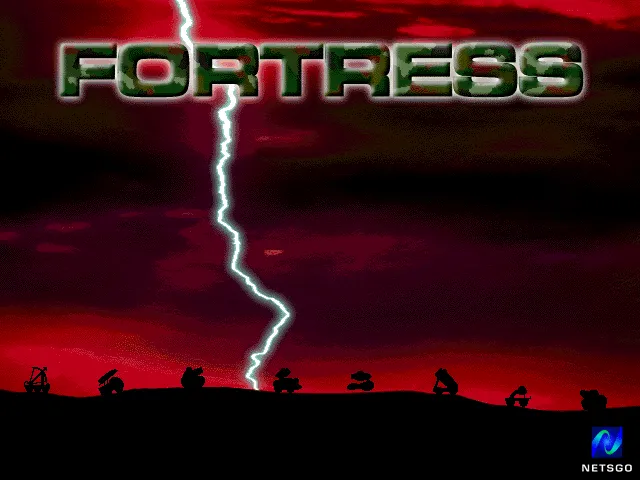
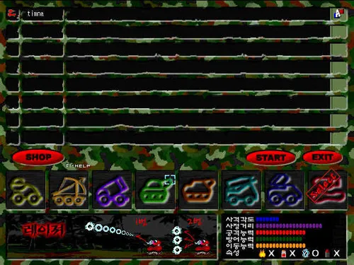
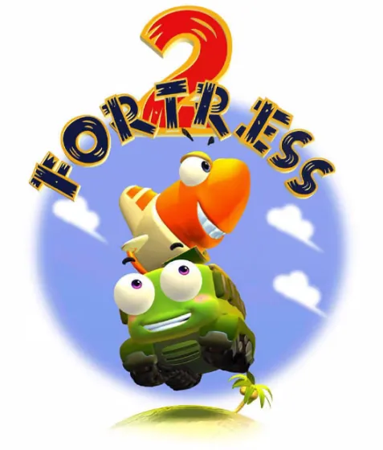
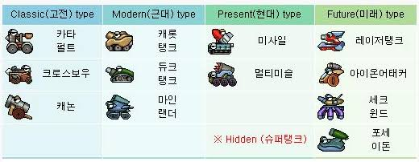
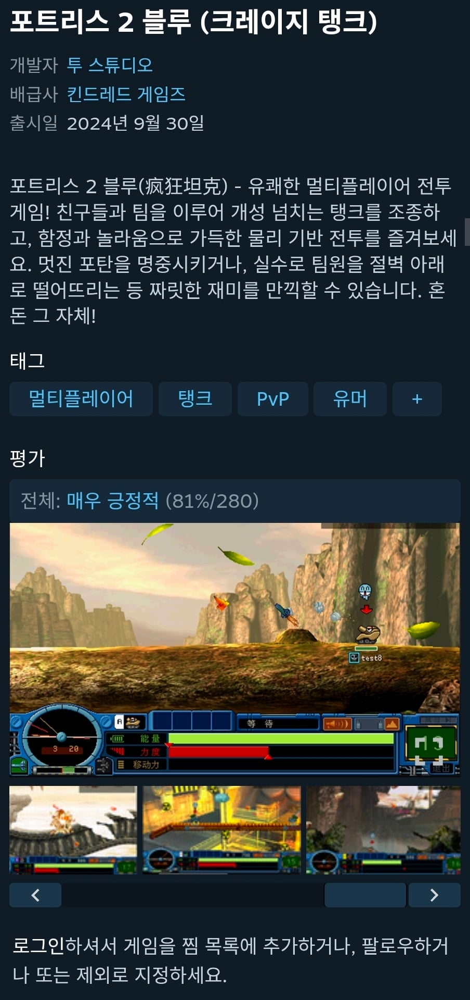

포트리스 1 있는거 모르더라
그시절 Bgm
+ 포트리스2는 스팀에도 존재함





포트리스 1 있는거 모르더라
그시절 Bgm
+ 포트리스2는 스팀에도 존재함

헐ㅋㅋㅋ 진짜 같은 핏줄이었구나
베이스가 소련 국가라니ㅎㅎ
나때는 어썰트기어 했었따....
슈탱
난 어썰트기어 재맜게 봤는데 ㅋㅋ
저런 게임 특징 고인물 졸라 많음
ai로 서버 만들어서 아직도 하고있음 pve도 되더라
나도 궁금해서 찾아보니까
둘 다 원곡이 go west라는 곡이네
그 곡들 원곡이 캐논 베이스 소련 국가라고 함
둘이 같은 곡이 사실상 맞긴하네 ㅋㅋㅋ